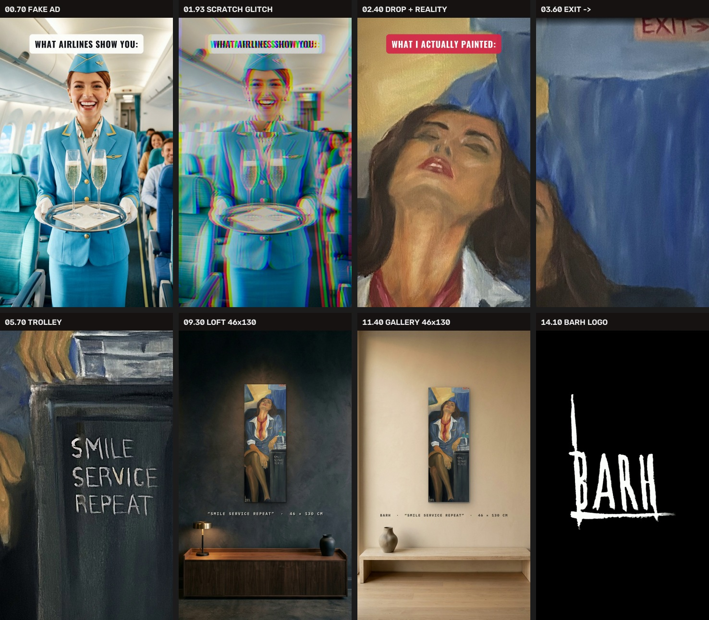

Главный вирусный монтаж «Ожидание vs Реальность» (15.00 с · 112 BPM · без пустых полей) и два спокойных запасных варианта.
15.00 с · 112 BPM · −13.7 LUFS. Приторная «рекламная стюардесса» → скретч пластинки → жёсткий dark-pop дроп → детали и мазки → показ картины 46×130 см в двух интерьерах → логотип BARH.

▶ Скачать главный ролик (со звуком 112 BPM)15.00 с · 1080×1920 · джингла → скретч → dark-pop бит ↓ Версия без звука (сетка 112 BPM)под «Housewife» (Tate McRae) или любой тренд 110–115 BPMСветлая галерея · ноль фраз поверх живописи
↓Скачать «Чистый ArtTok»